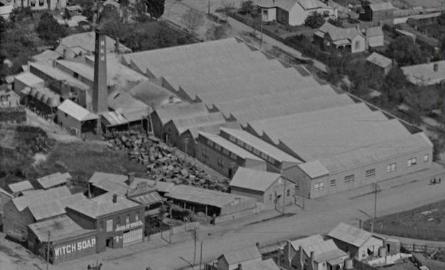
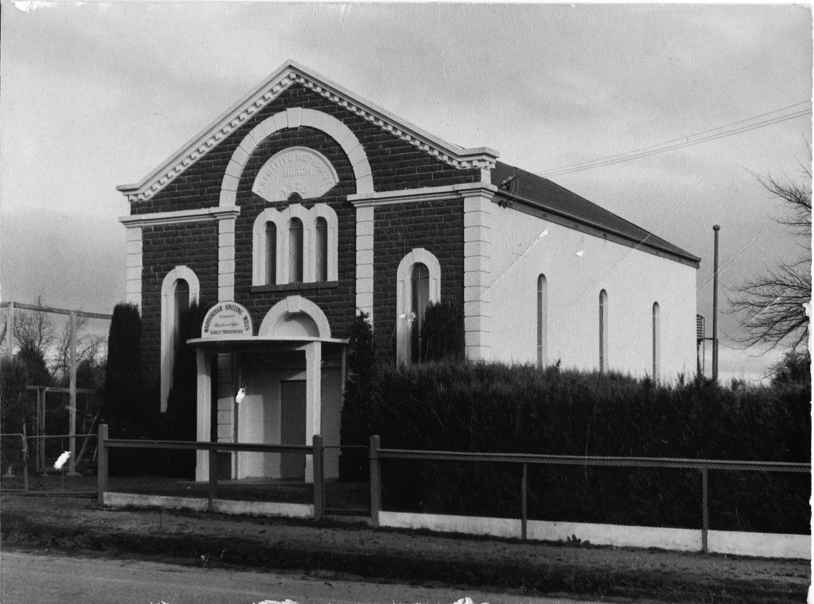
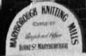
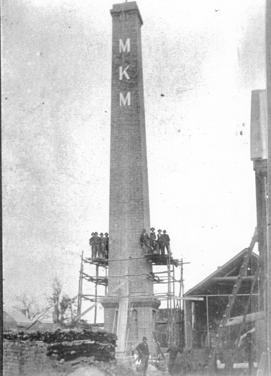
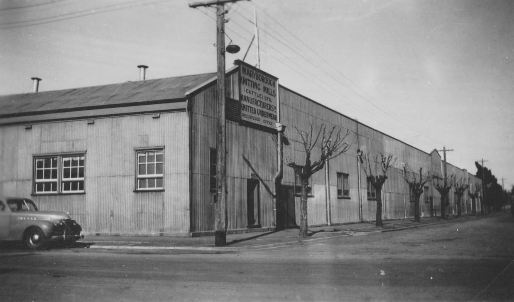
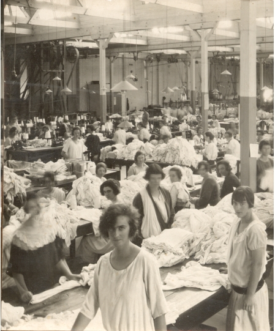
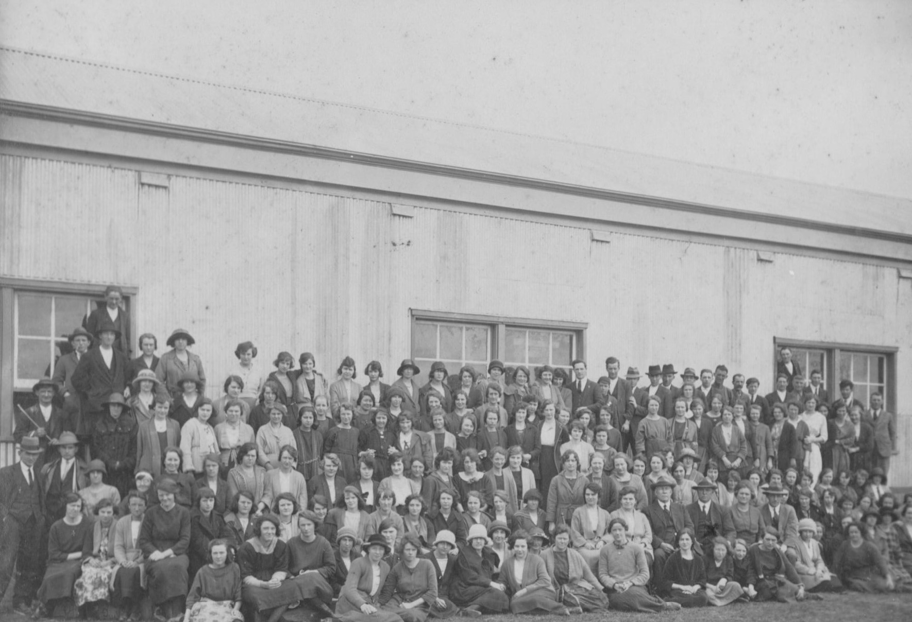
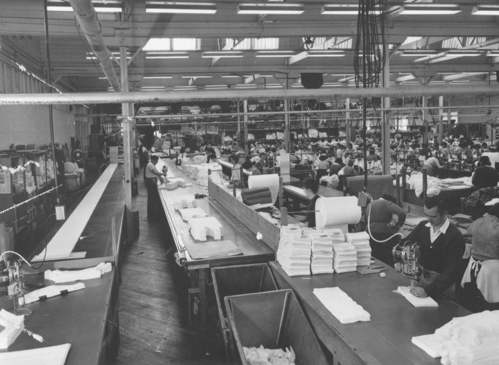
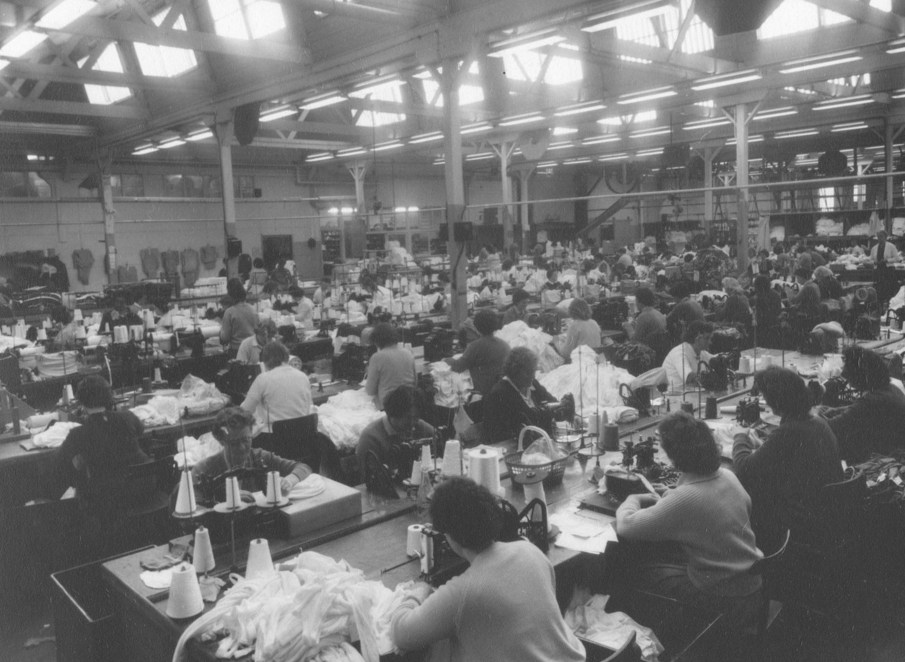

The Maryborough Knitting Mill
|  |  |  |
The Maryborough Knitting Mill, originally known as the Cuttle Knitting Mill, was a significant industrial establishment in Maryborough, Victoria. It relocated from Clunes to Maryborough in 1923, becoming a major employer and contributing to the town's industrial diversification after the gold rush. The mill eventually closed in the early 1990s due to overseas competition.
Here's a more detailed look at the mill's history...
Post-Gold Rush Industrialization
Following the decline of gold mining, Maryborough actively sought to attract industries to maintain its prosperity. The Maryborough Progress Association played a key role in this effort.
Relocation and Growth
The Cuttle Knitting Mill, previously located in Clunes, was persuaded to relocate to Maryborough in 1923.
|  |  |
Major Employer
The mill became a significant employer in the region, providing jobs for many residents and contributing to the local economy. MKM reached its peak employment, of over 800 people, in 1970. The knitting mill became part of Jockey Australia.
|  |  |  |  |
Product Range
Initially focused on "whitewear" (cotton underwear), the mill expanded its production to include a wider range of cotton, woollen, and artificial fiber garments.
Town Power Supplier
The Maryborough knitting mill, formerly Cuttles, was also the source of town electricity before supply came from Yallourn, Gippsland.
Closure
The Maryborough Knitting Mill closed in the early 1990s due to increased competition from cheaper imported clothing.
Legacy
The mill's 82-foot-high chimney remains as a preserved landmark, now located in the Goldfields Shopping Centre. The building now occupied by MillHouse evolved from an office block for the knitting mill, to the home of SkillShare, and now to the home of MillHouse - Neighborhood House.